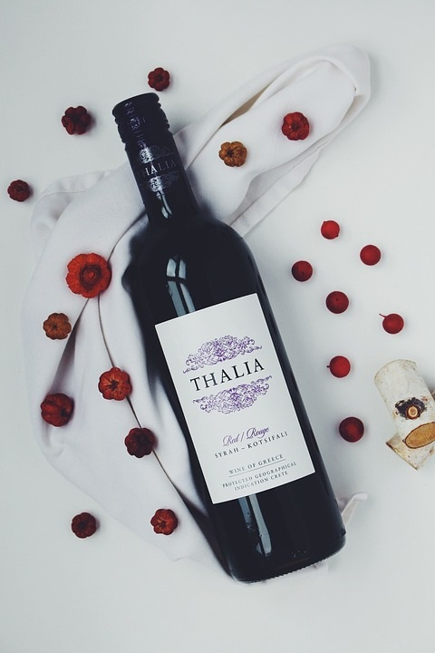

Tintos
Si querés disfrutar de un vino tinto suave, que no sea tan amargo y ácido, debés probar el Malbel y el Merlot. Estos son vinos suaves pero con un buen cuerpo y un sabor y aroma único. Ideales para principiantes.
Rosados
Con los aromas que nos encantan del tinto y la frescura de los blancos, nuestros vinos rosados tienen un un sabor sencillo con toques frutales que pueden consumirse con una infinidad de platos.
Blancos
Aromáticos, agrios, expresivos y deliciosos, poco importa cuál prefieras, los vinos blancos "La Catalina" engalanarán siempre tu mesa con exquisitos sabores y texturas.